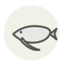

Albacore
Germon (thon blanc)
| Latin name | Thunnus alalunga |
|---|---|
| Family | Fish & seafood |
| Origin | Bay of Biscay & temperate oceans |
| Season (France) | June – October |
| Flavour | Mild · Delicate · Rich · Marine |
| Typical price (France) | 14–25 €/kg |
What it is
Its Latin name means long wing: the pectoral fins reach back past the anal fin, further than on any other tuna, and that single mark is what keeps it out of the bluefin bin. Basque boats still take it on pole and line, one fish at a time, and the tins made from it are sold as bonito del norte - which is not a bonito at all.
In the kitchen
The loin goes from raw to dry between one turn and the next: thirty seconds a side on a fierce pan and a cool centre, or nothing. In a marmitako it goes in off the heat, once the potatoes are already done.
Goes with
Piquillo pepper Tomato Espelette pepper Potato Olive oil Onion Garlic Bay leaf
Same species
Maguro-bushi Mojama Tuna bottarga Tuna Tuna belly (toro) Ventresca
In season alongside
Allis shad Brill Arctic char Cod European conger Crayfish
Something wrong here, or missing? Tell us